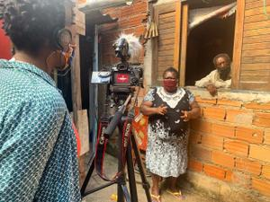
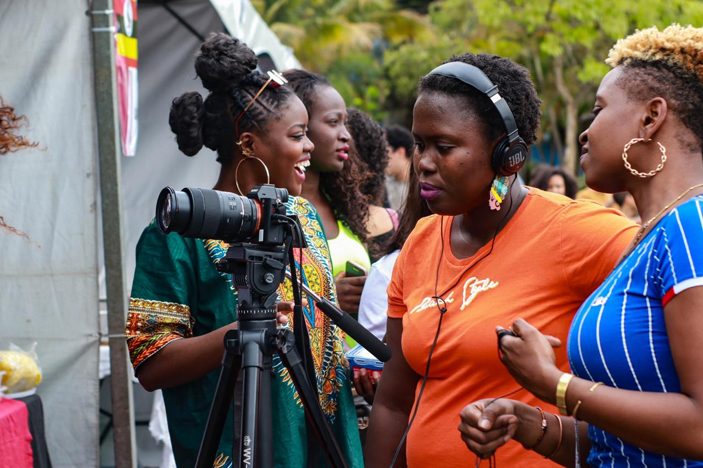

Você já parou para pensar como as tecnologias do audiovisual podem impactar a vida e o imaginário dos moradores das periferias? Equipamentos, softwares e cursos de produção audiovisual formam um conjunto de técnicas e saberes que poucos brasileiros têm acesso no mundo digital.
A fotógrafa, videomaker e fundadora da produtora Zalika Produções, Naná Prudêncio, se reconhece como uma "Preta nerd", por entender que a tecnologia alimenta seus sonhos e a capacidade de interpretar o mundo a sua volta. A produtora tem como propósito construir novos saberes e narrativas, a partir de histórias de pessoas periféricas que representam de fato o seu cotidiano. Ela destaca que a criação da produtora está conectada com a sua autoafirmação profissional. "Eu acho que o início da Zalika foi eu acreditar que ia ter que construir o meu espaço, não só para mim, mas para as pessoas pretas, principalmente mulheres pretas"
Segundo Naná, a Zalika Produções tem proposta de realizar projetos audiovisuais, artísticos, educacionais e culturais. Ela busca inspiração em comunidades e grupos culturais marginalizados para produzir e apresentar conteúdos transformadores em forma de arte e com novas narrativas. Durante a pandemia, Naná iniciou um processo de registrar as ações solidárias em curso em diversas quebradas de São Paulo para produzir o filme "Pandemia do Sistema", que aborda como o racismo, o desemprego, a insuficiência no atendimento de saúde nos territórios periféricos durante a pandemia do novo coronavírus resultam em uma catástrofe. "Surgiu nessa ideia de mostrar para nós da quebrada que tem gente passando fome, tem gente na miséria na sua rua, na sua viela, no seu bairro, no seu quarteirão, e mostrar para o sistema em geral que nós não estamos de chapéu, a gente sabe o que está acontecendo e a gente sabe que a população preta e periférica é a que mais está morrendo de covid-19, porque é a que mais morre de tudo mesmo", diz Naná.
Possibilidade de sonhar
Naná conta que as tecnologias do audiovisual transformaram a sua vida. "Eu acho que o audiovisual me trouxe a possibilidade de sonhar, sabe? Antes do audiovisual, eu estava sem vontade nenhuma de sonhar", afirma. Ela lembra que o interesse pela produção audiovisual surgiu na quebrada onde ela mora, no Parque Pinheiros, bairro de Taboão da Serra (SP). Foi a partir do envolvimento com movimentos culturais e sociais do território que surgiram as primeiras oportunidades de fotografar eventos culturais e esportivos. "Eu faço parte de um time de várzea e a gente faz as festas das crianças, essas coisas. E a oportunidade veio aí: toda vez que tinha festa, os meninos jogavam uma câmera.
Naná conta que as tecnologias do audiovisual transformaram a sua vida. "Eu acho que o audiovisual me trouxe a possibilidade de sonhar, sabe? Antes do audiovisual, eu estava sem vontade nenhuma de sonhar", afirma. Ela lembra que o interesse pela produção audiovisual surgiu na quebrada onde ela mora, no Parque Pinheiros, bairro de Taboão da Serra (SP). Foi a partir do envolvimento com movimentos culturais e sociais do território que surgiram as primeiras oportunidades de fotografar eventos culturais e esportivos. "Eu faço parte de um time de várzea e a gente faz as festas das crianças, essas coisas. E a oportunidade veio aí: toda vez que tinha festa, os meninos jogavam uma câmera na minha mão e eu começava a tirar umas fotos.
